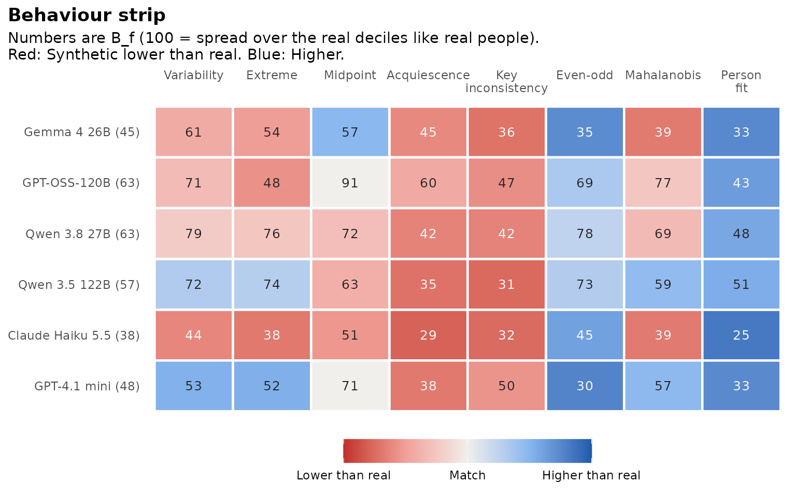
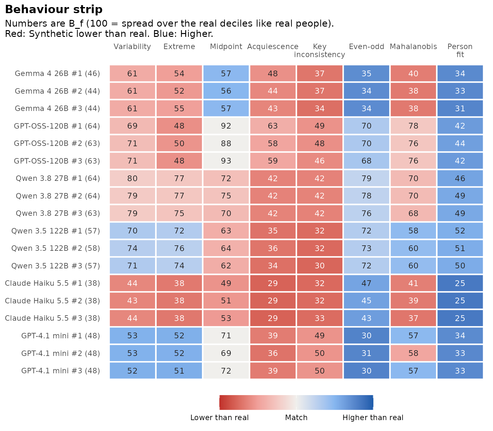

Two sets of answers can land in the same score deciles and still be
given in very different ways. Behaviour compares how synthetic and real
respondents answer, with eight features per respondent. This tutorial
covers behaviour_features(), flag_careless(),
synthetic_behaviour() and gg_behaviour().
These functions take the raw answers and an item table, and do the keying themselves.
library(synthcheck)
h <- hexaco_items[hexaco_items$trait == "H", ]
real <- hexaco_real[hexaco_real$country == "Canada", ]
ca <- hexaco_llm[hexaco_llm$country == "Canada" & hexaco_llm$attempt <= 3, ]The eight features
| Feature | What it measures | Careless side |
|---|---|---|
variability |
SD of the raw answers | Very low or very high |
extreme |
Share of answers at the lowest or highest category | High |
midpoint |
Share of answers at the middle category | High |
acquiescence |
Mean raw answer minus the scale midpoint | High |
key_inconsistency |
Gap between positive and reverse-keyed items of a facet | High |
even_odd |
Agreement of odd and even items across facets | Low |
mahalanobis |
Distance of the facet means from real people | High |
person_fit |
under a graded response model fitted to the real data | Low; very high means “too coherent” |
behaviour_features() gives the eight values for every
respondent. The reference for Mahalanobis distance and person fit comes
from the real data:
syn1 <- ca[ca$attempt == 1, ]
f_syn <- behaviour_features(syn1, h, real = real)
f_real <- behaviour_features(real, h)
rbind(real = sapply(f_real, median, na.rm = TRUE),
synthetic = sapply(f_syn, median, na.rm = TRUE))
#> variability extreme midpoint acquiescence key_inconsistency even_odd
#> real 1.853185 0.20 0.100 -0.075 1.0409722 0.6569726
#> synthetic 1.781493 0.15 0.075 -0.550 0.5256944 0.9226334
#> mahalanobis person_fit
#> real 1.799893 0.4623339
#> synthetic 1.718303 1.5634440Person fit fits one graded response model per scale with mirt, on the
real data only. It is the slowest feature.
fit_scales = character(0) skips it, which is handy while
you explore.
Careless real respondents
Real data have careless respondents too. flag_careless()
flags a real respondent when at least two of the eight features fall in
the most extreme 2.5% on the careless side:
fl <- flag_careless(real, h)
mean(fl$careless)
#> [1] 0.04274005
table(fl$n_flags)
#>
#> 0 1 2 3 4
#> 1465 170 57 8 8By default synthcheck compares synthetic respondents with all real
respondents, because that is the data people can actually collect.
clean_real = TRUE in synthetic_behaviour() and
authenticity_benchmark() compares them with the real
respondents left after the flagged ones are removed.
careless_rule takes your own rule: A function of the
feature table that returns TRUE for careless
respondents.
strict <- function(f) f$variability < 0.5 | f$person_fit < -3
flag_careless(real, h, rule = strict)The Behaviour index
synthetic_behaviour() cuts the real values of each
feature at their deciles and counts the share of synthetic respondents
in each decile, as Overlap does for score deciles. A feature scores 100
when synthetic respondents spread over the real deciles like real
people, and 10 when they all fall in one decile. Behaviour is the mean
over the eight features.
beh <- synthetic_behaviour(as_synthetic_list(ca), real, h)
beh
#> Behaviour of synthetic respondents
#> 40 items, 1708 real respondents; person fit on H.
#>
#> model attempts Behaviour Lowest Highest lz < P5 (%) lz > P95 (%)
#> Gemma 4 26B 3 44.8 44.3 45.8 0 1.5
#> GPT-OSS-120B 3 63.2 62.8 63.9 0 3.1
#> Qwen 3.8 27B 3 63.5 62.8 64.0 0 0.1
#> Qwen 3.5 122B 3 57.3 56.9 58.1 0 0.0
#> Claude Haiku 5.5 3 37.8 37.6 38.1 0 0.0
#> GPT-4.1 mini 3 48.0 47.8 48.3 0 3.5
#>
#> Behaviour is 100 when synthetic respondents spread over the real deciles of every feature.
gg_behaviour(beh)
Each cell is one feature for one model. The number is , red means the synthetic median is lower than the real one, blue means higher, and the shade shows how far the feature is from real people. Here the common pattern is “too tidy”: Key inconsistency and acquiescence are lower than in real people (red), while even-odd consistency and person fit are higher (blue). Synthetic respondents answer more consistently than real people do.
by = "attempt" draws one row per attempt to show how
stable each model is:
gg_behaviour(beh, by = "attempt")
The summary also gives the person fit tails: The share of synthetic respondents below the real 5th percentile of (careless-like) and above the real 95th percentile (too coherent). Real data have 5% in each.
beh$summary[, c("model", "lz_low", "lz_high")]
#> # A tibble: 6 × 3
#> model lz_low lz_high
#> <chr> <dbl> <dbl>
#> 1 Gemma 4 26B 0 0.0153
#> 2 GPT-OSS-120B 0 0.0307
#> 3 Qwen 3.8 27B 0 0.00133
#> 4 Qwen 3.5 122B 0 0
#> 5 Claude Haiku 5.5 0 0
#> 6 GPT-4.1 mini 0 0.0353No model has careless-like respondents. The medians of person fit are higher than in real people, but few synthetic respondents pass the real 95th percentile: They fit the model a little better than typical real people, not better than the most coherent ones.
Next
The benchmark puts Behaviour together with Overlap and Structure.